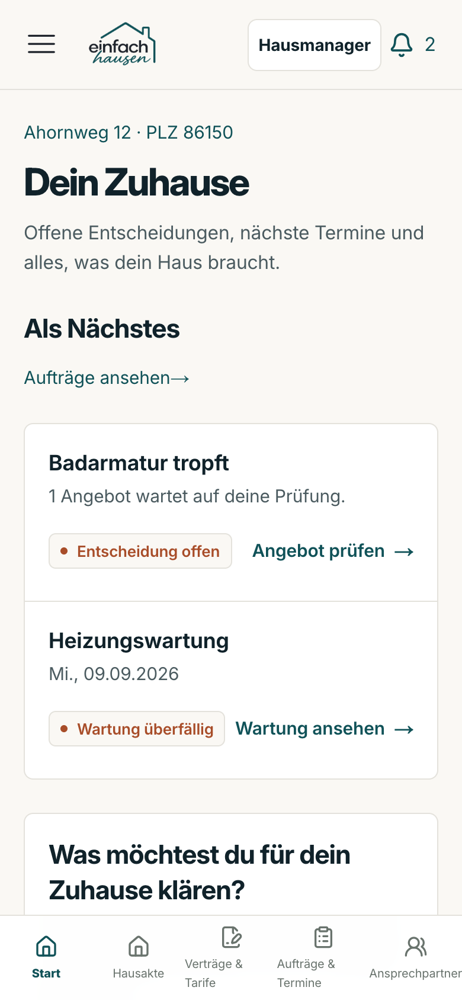
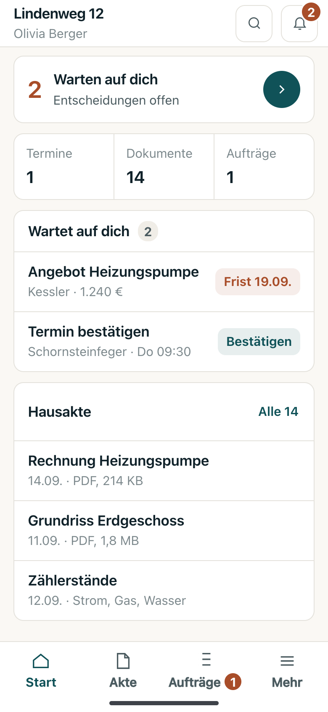
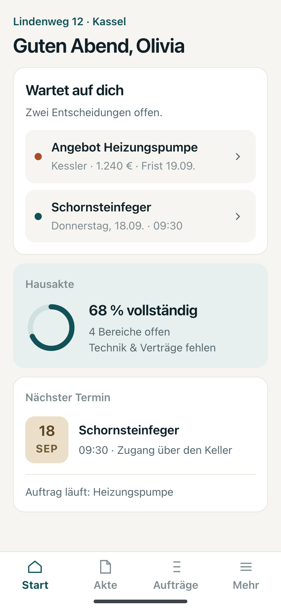
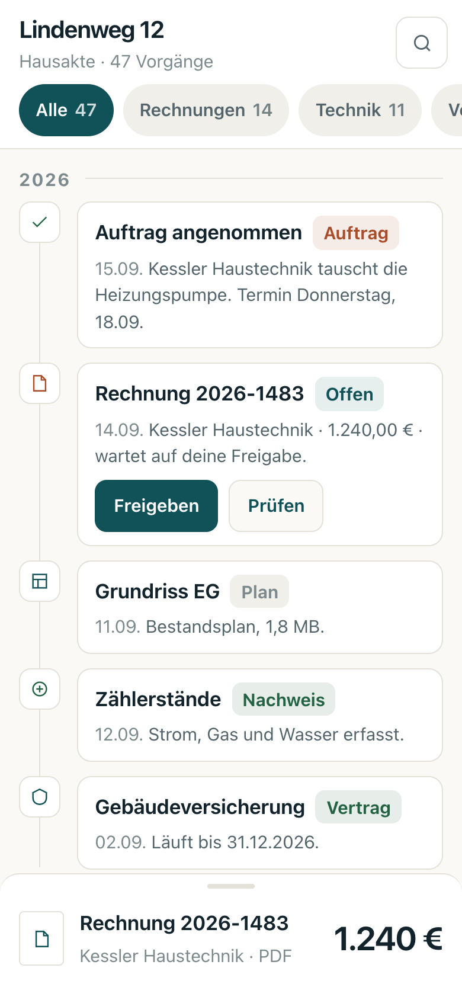

Meine drei Richtungen waren alle Desktop-Layouts. Eine Hausakte wird aber auf dem Handy benutzt.
Hier stehen sie neben deinem echten /app — und die Messung deckte etwas auf, das
gegen meine eigenen Vorschläge sprach. Ich habe sie daraufhin neu gebaut; unten stehen
beide Zahlen, vorher und nachher.




Gemessen an der laufenden Seite, 390 × 844, als angemeldeter Eigentümer.
| Messung | /app | /app/home | Bedeutung |
|---|---|---|---|
| Seitenhöhe | 1948 px | 4045 px | 2,3 bzw. 4,8 Bildschirme |
| Tippziele gesamt | 39 | 59 | Links und Knöpfe |
| davon unter 44 × 44 px | 22 | 31 | 56 % bzw. 53 % zu klein für einen Finger |
| Verschiedene Schriftgrößen auf einem Schirm | 6 | 6 | 15 / 16 / 17 / 13 / 14 / 10 px |
Überschrift h1 | 32 px / 760 | 32 px / 760 | Werbemittel-Größe auf einem Telefon |
/app,
31 von 59 auf /app/home. Apple sagt 44 px, Google 48 px. Das ist der Grund,
warum sich die App auf dem Handy „fummelig" anfühlt — nicht die Farbe.| Vorschlag | verschiedene Größen | Werte unter 12 px |
|---|---|---|
| A · Werkbank | 10 | 19 |
| B · Wohnzimmer | 13 | 10 |
| C · Akte | 8 | 18 |
dein echtes /app (Vergleich) | 6 | 1 |
Vier Schriftgrößen, keine unter 15 px, jedes Tippziel mindestens 44 × 44 px, keine umbrechende Beschriftung, nichts halb abgeschnitten.
| Vorschlag | Größen vorher | nachher | unter 12 px vorher | nachher | Tippziele unter 44 px |
|---|---|---|---|---|---|
| A · Werkbank | 10 | 4 | 19 | 0 | 0 von 11 |
| B · Wohnzimmer | 13 | 4 | 10 | 0 | 0 von 7 |
| C · Akte | 8 | 4 | 18 | 0 | 0 von 7 |
Die vier Größen sind 28 / 20 / 17 / 15 px — die eine Zahl, um die es auf dem Schirm geht · Abschnittstitel · Zeilentitel · alles Übrige. Was darunter lag, war entweder eine Beschriftung, die man auch weglassen kann, oder ein Fehler.
margin-left:auto
am rechten Rand, rutschte aber unter den Titel, sobald der zu lang war. Jeder Vorgang wurde
dadurch rund 30 px höher. Datum gehört in den Text, nicht an den Rand./app vergleichbar. Meine Mockups sind statische Bilder mit wenigen Links,
die echte App ist eine Anwendung mit 39. Ich behaupte deshalb nicht, dass meine Vorschläge
weniger kleine Tippziele hätten — das wäre ein Messartefakt. Belegbar ist nur das eine: dass
keines meiner Ziele unter 44 px liegt und 22 von 39 im echten /app schon.| Richtung | Überlebt das Telefon? | Was zu tun ist |
|---|---|---|
| B · Wohnzimmer | Ja, fast unverändert | Karten stapeln sich von selbst, die untere Leiste hat ohnehin kurze Namen. Nach dem Schrift-Durchgang braucht B am wenigsten. Die geringste Arbeit — und sie ist jetzt erledigt. |
| A · Werkbank | Ja, mit Anpassung | Die Dichte ist der Punkt: Zeilen ab 68 px, Kennzahlen in drei Spalten, vier Bereiche in der Leiste. Danach trägt es — aber A verliert auf dem Telefon genau das, was es auf dem Desktop stark macht: gleichzeitig sichtbare Vorgänge. |
| C · Akte | Ja — besser als gedacht | Der Ordnerbaum wird zur waagerechten Chip-Reihe, die Vorschau zum Blatt von unten. Alle fünf Vorgänge passen vollständig über das Blatt. Bleibt die meiste Arbeit von den dreien. |
Eine Zahl — A, B oder C. Oder eine Mischung, zum Beispiel „B, aber die
Vorgangsliste aus C". Danach übersetze ich die gewählte Richtung in packages/eh-design:
die vier Schriftgrößen werden Tokens statt Zahlen, die Zeilenhöhen werden feste Werte, die untere
Leiste bekommt vier Bereiche. Das geht per Push auf main, nicht per Pull Request —
das Design-Tor lehnt geänderte geschützte Pfade in PRs grundsätzlich ab.
Was ich nicht tun werde, solange du nicht wählst: am Designkern siegeln, committen oder deployen. Der laufende Prüflauf für PR #116 bleibt unberührt.